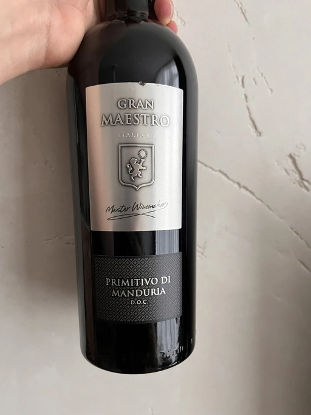

- Type
- Red Still, Dry
- Producer
- Maestro Italiano
- Vintage
- 2020
- Location
- Italy, Primitivo di Manduria DOC
- Grapes
- Primitivo
- Alcohol
- 14.5
- Sugar
- NA
- Price
- 419 UAH
- Cellar
- N/A
Ratings
2022-10-23 - 7.00
Simple Primitivo (hehe, even though the meaning of this word is different) with pretentious words on its pretentious label. Powerful, off-dry, silky and fruit-forward. It’s like a smoothie made of chocolate candies with cherry and liqueur.